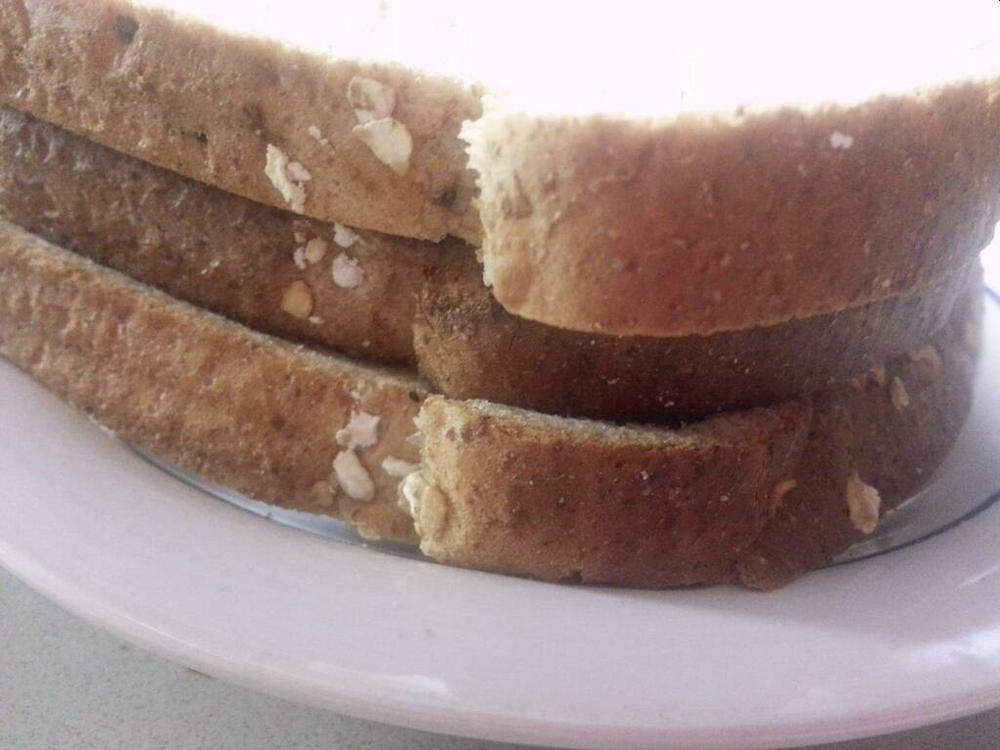

Toast Sandwich

By Qwantz - I took it in my kitchen after making the sandwich Previously published: https://twitter.com/ryanqnorth/status/448803352240205824, CC BY-SA 3.0, Link
Description
A toast sandwich (also known as a bread sandwich) is a sandwich in which the filling between two slices of bread is itself a thin slice of toasted bread, which may be buttered.
Ingredients
- Bread (3 slices)
- (Optional) Butter
- (Optional) salt and pepper
Steps
- Toast bread. Toast 1 slice of bread (to taste).
- (Optional) apply butter. Apply butter to toast slice (to taste).
- Assemble.Assemble sandwich, with the slice of toast within between both fresh slices of bread.
- (Optional) Add seasoning. Add salt and pepper (to taste).
Home